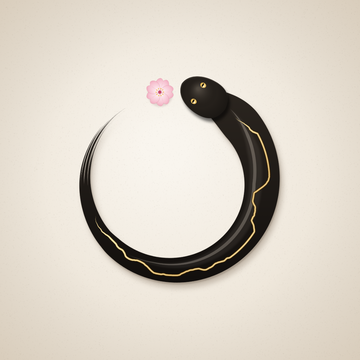
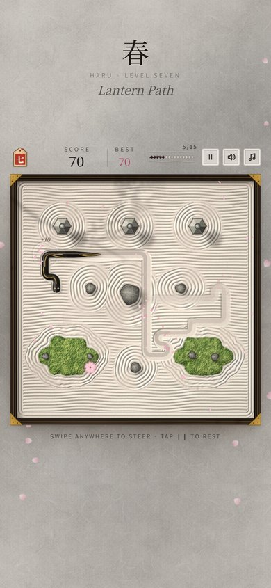
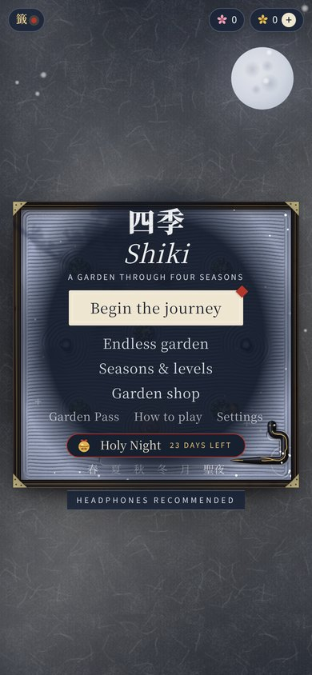

四季
Shiki: Zen Snake Garden
Guide a quiet snake through a raked sand garden. Gather blossoms, leave a gentle path, and travel through spring, summer, autumn, winter and the moon.


- Fifty hand-made gardens across four seasons and the moon
- An endless garden for when you just want to wander
- Calm music and nature sounds made for headphones
- Seasonal events: Pumpkin Night in October, Holy Night in December
- Robes, hats, trails and frames to collect, all earnable in play
- Game Center leaderboard and achievements on iPhone